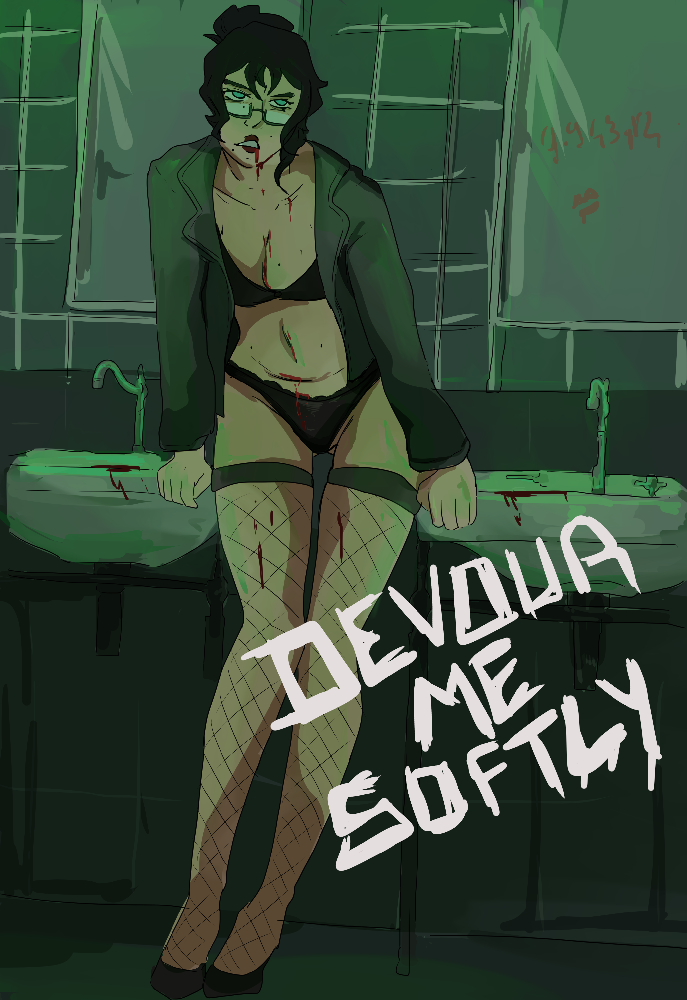
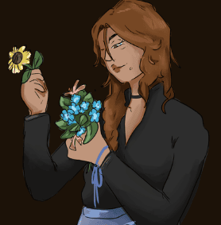

Aylin BelginTout le monde a faim de quelque chose. La différence, c'est ce que l'on accepte d'avaler.
Information connue
Une vérité inconfortable
Aylin n'a jamais supporté les masques. Pas ceux des humains, et encore moins ceux des vampires. Elle méprise les salons mondains, la prétendue sagesse des anciens qui parlent de noblesse oblige, et même les Toreador qui parlent de beauté sans chercher à la modeler.
Elle considère le désir comme l'une des rares choses honnêtes qui existent encore. Les gens mentent sur leurs opinions, leur position sociale ou leur vertu ; mais leurs envies, elles, finissent toujours par remonter à la surface.
Une esthétique de la rupture
Elle possède plusieurs boîtes spécialisées dans la production et le tournage de films érotiques et pornographiques. Contrairement à ce que l'on pourrait imaginer, elle n'a jamais semblé chercher la gloire ou la richesse, et n'apparaît que dans des vidéos à petit budget. Le genre de productions aux scénarios étranges, dont l'intrigue laisse suffisamment perplexe pour en oublier le titre du DVD.
Ses films parlent du désir, de la solitude, de l'oubli de soi et de la déréalisation de son propre corps. Certains y voient des provocations gratuites ; d'autres parlent d'œuvres avant-gardistes. La vérité est probablement plus dérangeante : Aylin cherche à déplacer lentement les limites de ce que les gens considèrent comme acceptable.
Le poids des fautes
Dans les sphères Toreador, Aylin possède une place étrange. La stratégie du clan à son sujet semble assez facilement déchiffrable : elle est là pour tester ce qu'ils peuvent faire, pour voir où se trouvent les limites. Sa réputation en prend constamment un coup, car elle peut paraître dérangée, mais son rôle reste considéré comme nécessaire.
Relations
Lignée
-
 Angelos
Angelos
- Elle est l'infante d'Angelos. Les raisons de cette étreinte restent inconnues. Le choix paraît étrange, Angelos étant particulièrement attaché à son image publique.
-
 Kerem Arslan
Kerem Arslan
- Kerem Arslan avait envisagé d'étreindre Aylin avant qu'Angelos ne la choisisse comme infante.
-
 Kaadir
Kaadir
- Elle lui demande parfois de l'aide dans ses affaires de Fléau
-
 Baran
Baran
- Ils s'entendent assez pour se partager la charge de travail, et s'entraident souvent. Aucun d'entre eux ne cherche vraiment la gloire.
-

Maliha - Elle sont toute deux dans le culte de Soteria, meme si la position de Aylin sur la question est plus difficile à résumer.
Filmographie
-
Body Language (1998), réalisé par Aylin
Pitch : plusieurs personnages suivent un stage pour apprendre à mieux comprendre les fantasmes étranges de leur partenaire. À mesure que les séances avancent, ils deviennent moins capables de distinguer leurs propres envies de celles des autres. -
After Midnight, Apartment 12 (2005), Aylin y joue Nadia
Pitch : plusieurs personnes d'un immeuble entendent des pleurs et des rires derrière la porte d'un appartement censé être vide. Le désir de posséder ce qui s'y trouve finit par dévorer tous les habitants. -
Devour Me Softly (2013), Aylin y joue Carla
Pitch : une relation entre Carla et Sofia, deux femmes qui deviennent progressivement dépendantes l'une de l'autre. Après avoir vu un chien se faire dévorer par un autre, leur relation sexuelle tourne au cannibalisme mutuel.